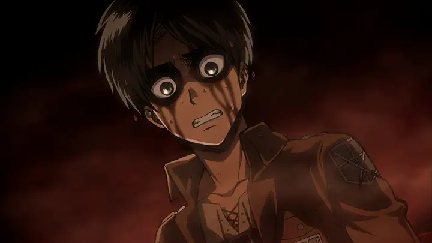

Attack on Titan
·Season 1
A world that is at the mercy of Titans...Finding themselves now food for the Titans, humanity built a giant 50-meter wall to protect themselves, giving up the freedom. But one day, with the appearance of a Colossal Titan that was even taller than the wall, the people's "peace" suddenly fall to pieces. ©Hajime Isayama, Kodansha/“ATTACK ON TITAN” Production Committee. All Rights Reserved.
2013 25 episodes

S1 E1 - Episode 1 To You, in 2000 Years The Fall of Shiganshina, Part 1
April 7, 2013
26min
U/A 16+
Shiganshina District, a city on all sides surrounded by a wall over 50 meters tallー Humanity has made such walls to protect themselves from the Titans. A young boy Eren who yearns to explore the outside world lives in the walls with his trusty friend, Mikasa. Hearing about the return of the Scout Regiment who explore the outside world, he goes to welcome them but is greeted by unexpected sight.